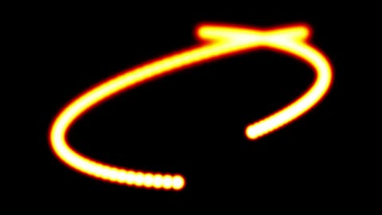

HomeAccueil / ExamplesExemples
Heat diffusionDiffusion de la chaleur
Each pixel of buffer A drifts towards the mean of its neighbours (heat equation) while two hot sources move.Chaque pixel du tampon A tend vers la moyenne de ses voisins (équation de la chaleur) pendant que deux sources chaudes se déplacent.

CategoryCatégorie: Multiple passesPasses multiples - diffusion_chaleur.glsl - 13 lineslignes - File on GitHubFichier sur GitHub
In the program: Examples, choose it, Add to the list. Or copy the code into a file next to the program and drop it on the window.Dans le programme : Exemples, choisissez-le, Ajouter à la liste. Ou copiez le code dans un fichier et glissez-le sur la fenêtre.
This example uses several passes: the files below go together.Cet exemple utilise plusieurs passes : les fichiers ci-dessous vont ensemble.
CodeCode
diffusion_chaleur.glsl
// SPDX-License-Identifier: LicenseRef-ShaderToMP4-Proprietary
// Copyright (C) 2026 Patrick JAILLET. Tous droits reserves.
// fr: Diffusion de la chaleur — Chaque pixel du tampon A tend vers la moyenne de ses voisins (équation de la chaleur) pendant que deux sources chaudes se déplacent.
// en: Heat diffusion — Each pixel of buffer A drifts towards the mean of its neighbours (heat equation) while two hot sources move.
// iChannel0=bufferA
void mainImage(out vec4 fragColor, in vec2 fragCoord) {
float t = texelFetch(iChannel0, ivec2(fragCoord), 0).r;
vec3 col = vec3(smoothstep(0.0, 0.5, t), smoothstep(0.3, 0.8, t), smoothstep(0.7, 1.0, t));
fragColor = vec4(col, 1.0);
}diffusion_chaleur.bufferA.glsl
// SPDX-License-Identifier: LicenseRef-ShaderToMP4-Proprietary
// Copyright (C) 2026 Patrick JAILLET. Tous droits reserves.
// iChannel0=bufferA
void mainImage(out vec4 fragColor, in vec2 fragCoord) {
ivec2 p = ivec2(fragCoord);
float c = texelFetch(iChannel0, p, 0).r;
float n = texelFetch(iChannel0, p + ivec2(1, 0), 0).r + texelFetch(iChannel0, p - ivec2(1, 0), 0).r
+ texelFetch(iChannel0, p + ivec2(0, 1), 0).r + texelFetch(iChannel0, p - ivec2(0, 1), 0).r;
float t = mix(c, n * 0.25, 0.9) * 0.9995;
for (int i = 0; i < 2; i++) {
vec2 s = iResolution.xy * (0.5 + 0.35 * vec2(sin(iTime * (0.7 + 0.4 * float(i)) + float(i) * 2.0), cos(iTime * (0.5 + 0.3 * float(i)))));
t = max(t, smoothstep(14.0, 4.0, length(fragCoord - s)));
}
if (iFrame < 2) t = 0.0;
fragColor = vec4(t, 0.0, 0.0, 1.0);
}